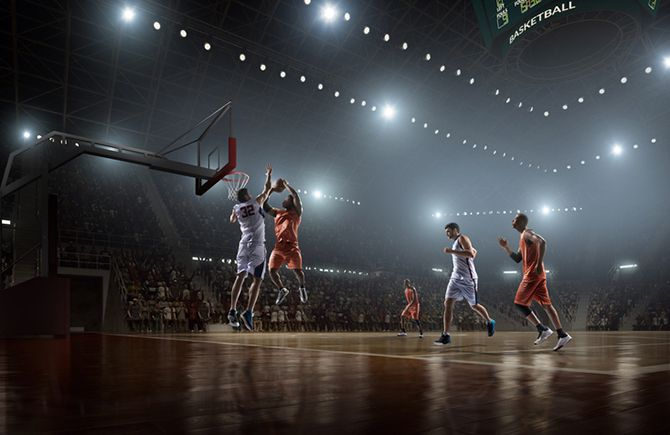
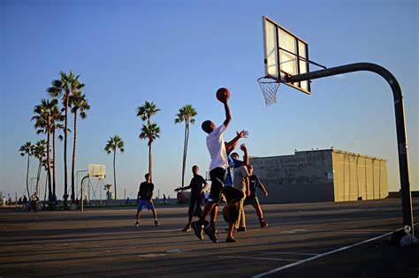
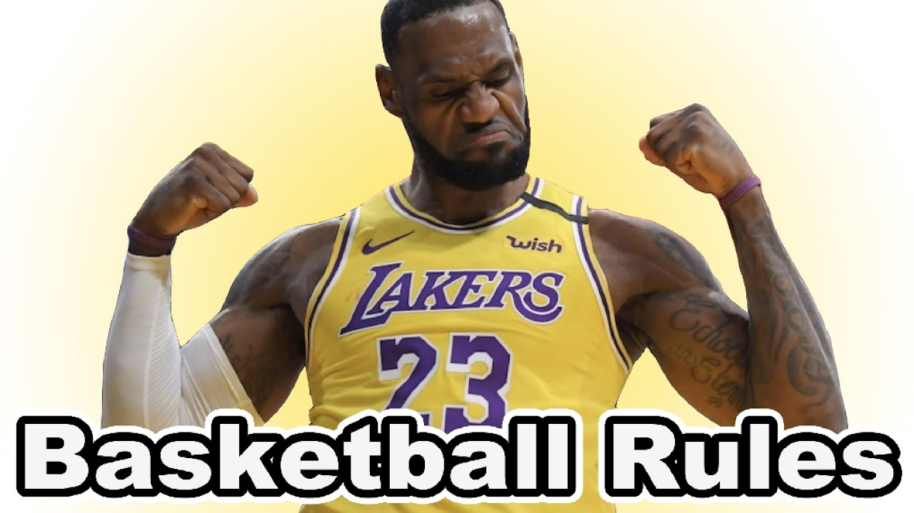
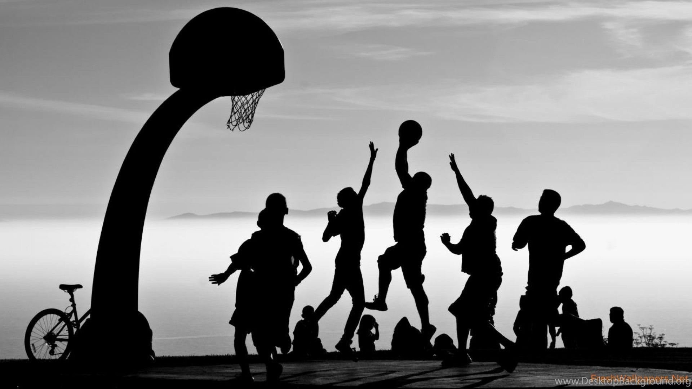
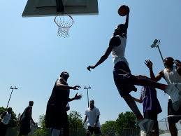
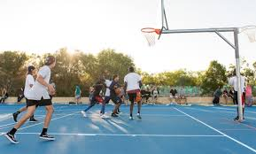
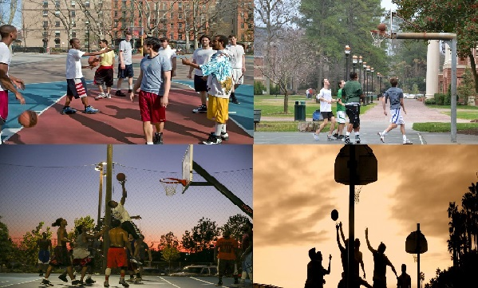
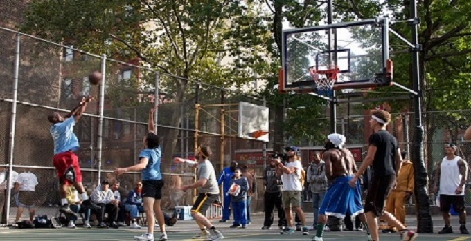
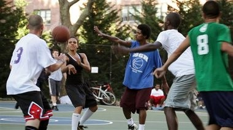

When do athletes arrive in the week and at what times do people come to play on courts with others?
When do athletes arrive in the week and at what times do people come to play on courts with others?
 Basketball Training Talk Tips, and Secrets of Improving
When do athletes arrive in the week and at what times do people come to play on courts with others?
Basketball Training Talk Tips, and Secrets of Improving
Basketball Training Talk Tips, and Secrets of Improving
When do athletes arrive in the week and at what times do people come to play on courts with others?
Basketball Training Talk Tips, and Secrets of Improving
The season starts in spring time of year, that's when pickup basketball season just getting started outside. Ready-to-go with pick-up games is open for everyone who want to try a basket on public courts & meeting-places outdoors. Which means there is no need for you to book the court, nor summon your friends if you want a game on the fly – just drop by any time between late afternoon (16:00 ex.) and 9pm (21:00 ex.) at night and you're more than likely to find some willing opponents and a game having fun meeting people through sports informally. When the games usally start on weekends varies more, from late morning to day time (kl. 10:00 - 14:00), or sometimes fullpacked court from (15:00 - 18:00 ex. )

Half-court play
Fouls
Streetball rules vary widely from different court to court. Rules of what plays that are legal and illegal are decided by the word fouls (a foul in basketball).

No referees are employed, so all players of both teams usually go by the rule to “call your own foul”. When a player who believes he has been fouled, simply needs to call out “Foul!” in exact moment, and play will be stopped, with the ball awarded to the fouled player’s team on the top of court (free throws after foul are usually not awarded in streetball, also difference to organized indoor basketball).

In some cases of competitive and experienced streetball games are the continuous calling of fouls generally disfavored. That can be because of the amount of pauses and protestations scenario against such a call in individual groups. Another argument that goes both ways is about “competitive sport ethic”, about the seriousness of a particular game.

Other violations in basketball which are usual include traveling, double-dribble, carrying, kicking, goaltending, and backcourt violation.

Structure of games
At the beginning of the game and after each made basket, play begins at the top of the key. A "checking" system is used to ensure that both teams are ready to begin play. This involves the offensive player saying "check" while throwing the ball to his defender. The defender then makes sure his/her team is ready and then throws the ball back to begin play.


If the ball goes out of bounds during play, the ball can either be checked from out of bounds near where the ball went out or at the top of the key, depending on the rules established before the game.

If the defending team gains possession of the ball, they must take the ball out to beyond the three-point line before they can score a basket. This does not need to be at the top of the key (one leg crossing the line is enough) and no checking is required. This is analogous to taking the ball to the other side of the court in a full-court game.

Pickup Basketball has many Benefits. Pickup hoops with days of getting together at the local park to “run” are always popular and accessible. Summer streetball and city playing, the heartbeat of the game. Pickup Basketball Can Aid Player Development
Pick Up basketball is necessary for a player’s development. Physically and mentally. Physically, a player needs to know where they stack up with their peers and with players who are older, stronger and better than them. The playground or local rec center is the best place to be able to do this. Also, when a serious player spends a lot of time working out in the weight room, putting up shots or working on their skills; a pick-up game is a safe place to strut their new stuff. The playground is the perfect place to show off what you’ve been working on. Because who cares if you mess up a little bit? There’s no coach to yank you for screwing up or anything like that. It’s just you and a bunch of other hoopers doing their thing.

Pick Up Basketball Aids Conditioning
Also, pick-up is a nice way to stay in shape. Whether it’s during the season or not, whenever you can get a bit of a sweat in and run up and down a bit it is an excellent source of exercise. About the benefit of pickup basketball on the player's heart. So far as the mental aspect of the game, pick-up basketball has a lot to offer. A pick-up game is a place where a player can easily build confidence. There’s generally not a ton of defense being played so scoring is easy. And nothing builds a players confidence more than seeing that ball go through the hoop. It doesn’t matter who it is against either. Many players report first testing gains in our basketball speed and agility program on the pickup basketball courts. Plus, like I stated before, young players often get the chance to go against older guys and success there can go a long way for a player’s development. Conversely, these older guys have the craftiness and tricks that many young players can learn from. Pick Up Basketball Increases The Fun Factor

Pick Up basketball is a place where the game remains innocent. A blacktop court is a holy place. There is something magical about a game of pick-up. Or an entire day of pick-up for that matter. To just go out there with a couple of buddies and compete for bragging rights is so much fun. It doesn’t even have to be 5 on 5. It can be 4 on 4 or all the way down to 1 on 1. It can be a game of hunch or a game of 21. It can even be a game of HORSE. It doesn’t make a difference. Pick-up basketball is fun. And it will always remain good fun.

Sure pickup basketball has it’s problems and characters, but we think there are real life lessons that can be learned in dealing with some of them without having refs around to “settle” everything. Try to work hard and implement new skills while playing pickup basketball.
These days the organized game is a lot about money, and politics, and pressure on kids to perform. The good thing about pick-up is that none of those things matter. The only thing that matters on the hoop court that particular day is whether or not you got game. Remember to try and introduce your new skills on the pickup court, then practice, and then into your game.

A pickup basketball game is merely a group of players showing up at their gym or at a outdoor streetpark and organizing a game between recreational players looking for a game.An impromptu game with friends and strangers in a park or backyard lends itself to variety. Sometimes they don't even know one another but have a mutual desire to play a competitive game of basketball. It is not an organized league or part of any organized group…merely, players looking to play and joining with other likeminded athletes. Most of us agree that pickup basketball is about as good as it gets.

Offseason Pickup Basketball Improves Your Game All of the offseason drills in the world can’t replace the real thing. And while pickup basketball is not the same as organized ball, the right games can still go a long way towards honing your craft. Youth athletes can benefit from pickup basketball in the following ways: Getting in their reps - shooting, dribbling, passing, and the fundamentals of basketball require incessant repetition to master. Summer pickup games are a great opportunity to get in quality repetitions without any time limit or other complicating factors. Getting experience against varied opponents - youth athletes primarily only face competition within their same age range and general ability levels. Sometimes playing against bigger, stronger, and more talented players can be a benefit in the long run. Staying in shape - even the most relaxed pickup game offers a great workout. Keeping a young basketball player’s cardiovascular endurance, strength, and flexibility at a high level year round is much easier than building it back up each fall.
 Using Pickup Basketball Games to Build Good Habits
Along those lines, coaches and parents should tell young players that pickup games are an opportunity to become better by building good habits. It is possible to have fun and use proper fundamentals at the same time. In fact, for those of us who are endlessly competitive, it is the only way to have a great time.
Many youth players are quick to pass and hesitant to shoot. Still others will take outside shots without driving to the basket. Pickup games are great opportunities to build real basketball skills and confidence in young athletes.


Summer basketball offers a freedom and a fun factor which allows many ballers to come out of their shell.
Some players may also need to work on something specific to improve their game. For example, if a player is a great scorer but lacks in play creation, he or she can use pickup games as a blank canvas. This athlete can try to drive and dish, make skip passes, and other techniques they may have never tried before without risk of repercussion.

How to Choose the Right Pickup Game for You So where should young athletes be playing? Many kids will have a neighborhood hoop down the street or a few blocks over. Yet this might not be the best opportunity for kids who are interested in bettering themselves at players. Young basketball players and their parents should consider the following: Safety - we have not touched on this, but the sad fact is that some basketball courts are not as safe as others. Pick a spot where kids will be comfortable and away from any bad influences. Level of play - for a skilled basketball player, finding competition can be a challenge. Look around the area and call up some teammates if necessary. Age of players - as we touched on earlier, sometimes playing against the older kids can be great. Other times, it may be a detriment. A physical mismatch can lead to sloppy play and potentially even injury. Fun factor - at the end of the day, kids should have fun playing basketball in the summer. If we are splitting hairs between playing with our friends and playing with kids who are a bit better, playing with friends might be the way to go. If a young player is playing basketball with the right attitude, they will improve.
A pickup basketball game is merely a group of players showing up at their gym or at a outdoor streetpark and organizing a game between recreational players looking for a game.An impromptu game with friends and strangers in a park or backyard lends itself to variety. Sometimes they don't even know one another but have a mutual desire to play a competitive game of basketball. It is not an organized league or part of any organized group…merely, players looking to play and joining with other likeminded athletes. Most of us agree that pickup basketball is about as good as it gets.
Offseason Pickup Basketball Improves Your Game
All of the offseason drills in the world can’t replace the real thing. And while pickup basketball is not the same as organized ball, the right games can still go a long way towards honing your craft. Youth athletes can benefit from pickup basketball in the following ways:
Getting in their reps - shooting, dribbling, passing, and the fundamentals of basketball require incessant repetition to master. Summer pickup games are a great opportunity to get in quality repetitions without any time limit or other complicating factors.
Getting experience against varied opponents - youth athletes primarily only face competition within their same age range and general ability levels. Sometimes playing against bigger, stronger, and more talented players can be a benefit in the long run.
Staying in shape - even the most relaxed pickup game offers a great workout. Keeping a young basketball player’s cardiovascular endurance, strength, and flexibility at a high level year round is much easier than building it back up each fall.
Using Pickup Basketball Games to Build Good Habits Along those lines, coaches and parents should tell young players that pickup games are an opportunity to become better by building good habits. It is possible to have fun and use proper fundamentals at the same time. In fact, for those of us who are endlessly competitive, it is the only way to have a great time. Many youth players are quick to pass and hesitant to shoot. Still others will take outside shots without driving to the basket. Pickup games are great opportunities to build real basketball skills and confidence in young athletes. Summer basketball offers a freedom and a fun factor which allows many ballers to come out of their shell. Some players may also need to work on something specific to improve their game. For example, if a player is a great scorer but lacks in play creation, he or she can use pickup games as a blank canvas. This athlete can try to drive and dish, make skip passes, and other techniques they may have never tried before without risk of repercussion.
How to Choose the Right Pickup Game for You So where should young athletes be playing? Many kids will have a neighborhood hoop down the street or a few blocks over. Yet this might not be the best opportunity for kids who are interested in bettering themselves at players. Young basketball players and their parents should consider the following: Safety - we have not touched on this, but the sad fact is that some basketball courts are not as safe as others. Pick a spot where kids will be comfortable and away from any bad influences. Level of play - for a skilled basketball player, finding competition can be a challenge. Look around the area and call up some teammates if necessary. Age of players - as we touched on earlier, sometimes playing against the older kids can be great. Other times, it may be a detriment. A physical mismatch can lead to sloppy play and potentially even injury. Fun factor - at the end of the day, kids should have fun playing basketball in the summer. If we are splitting hairs between playing with our friends and playing with kids who are a bit better, playing with friends might be the way to go. If a young player is playing basketball with the right attitude, they will improve.
Streetball is passion. Though it is not always beautiful, one could easily call it streetart. It is a rough sport for tough men which does not allow much of weakness. Streetball means competition including embarassement and sometimes even humiliation of opponents. However, it is a basis for friendships because there is one basic ingredient that connects all players: the love for the game.
Without any referee the flow of the game completely relies on the respect and the communication between the players. As a matter of fact this established different rules on every court where spectacular tricks count more than accurately obeying the rules of basketball. Traveling is accepted if an opponent-embarassing move is the result. Streetball is a sport that involves every part of your body, even the mouth: If you master trashtalk you master the court. Distracting the counterpart and entertaining the crowd is as much important as the actual game. These various aspects made streetball such an attractive show as it is today.
From its beginnings in the 70´s in the big cities of the US untill today the rules haven´t changed much but it´s got more and more influence within the street cultures around the world. Having its roots in the famous Rucker Park in New York City, streetball stepped up to other courts and cities where it was not enough for the boys to play on the team in their highschool.
Having not many opportunities for spending their free time streetball was the only chance to emulate their big idols from the ABA and later the NBA. Rapidly the games attracted a steady audience celebrating the vicious tricks and ankle-breakers of their “court-stars”.
These players became local legends and got nicknames within the community like “the Destroyer”, “Helicopter” or “Pee Wee”. Even the famous Julius “Dr. J” Erving showed his talents at the Rucker Park tournament in 1971. Butch Purcell, who kept track of the stats at Rucker Park, said about him: “Man oh man! He was dunking on people like crazy. Back then the games were only held on the weekends, so that next week, the word was spreading like wildfire over the city. When we showed up that next week to play our game, the park was so packed that people couldn’t get in.” After having played for three years in the team of the University of Massachusetts and pulling off tremendous stats there, he was not quite known within the audience at Rucker Park.
Nevertheless, Ernie Morris, a witness of the legendary encounter between Julius Erving and Joe Hammond claimed avidly: “I’ve seen so much great basketball in that park, but I’ve never seen anything like it since.” Thus, the legends around “Doc” laid the grounds for the incomparable success of streetball.
In the following decades it also got recognized by the dominating basketball brands like Nike and even induced brands like Kickz and AND1 to build their corporate identity on that specific form of basketball. This increasing interest by the economy was further promoted when Allen Iverson made it possible for a sheer streetballer from Philly to succeed in the NBA.
He was beloved by the whole generation of young streetballers and established the streetstyle within the NBA. Iverson´s popularity made it possible for Reebok who signed him to advertise the streetball culture and gain profit from it. Even today in the commercialized and digitalized environment of the NBA the biggest stars such as Kevin Durant or Kyrie Irving don´t hesitate to come out and demonstrate their skills on the court. One could argue that the pure streetball does not deserve this development because it lacks tradition and identity.
However, streetball is still played in its traditional form around the world and the main components sustained: When you dare to play streetball it strenghtens your credibility… even if you lose, you win the respect of everybody on the court.
Close (X)

Streetball is both a sport, lifestyle, an artform and is the unique style of basketball, where most general rules are ignored and player style is encouraged.
Played outdoors unformal in a meeting place, the origin of the word. The game is played under the open sky, in the yard and in the fresh air.
Usually played on a street court, or sport park or a street-urban area.
Streetball is basketball, but with certain rules relaxed. Often played with music in background, music in style of rap hip hop ex.
Friendly games on one halfcourt on one ring (Basket matches with 3 vs. 3 for ex.). Teams are usually 3 a side, and played on one basket in pickup-games.
Tournaments and competitions are also held with more teams, if many players join.
The game can be associated with the nice tricks and difficult dunks, but this is only in conjunction with making the basket of course. The large role of the team is played more by the technical skill of each player.
Streetbasket is much about individual skill level also, with dribbling in your own style moves, you are more free to express yourself as a baller bouncing and dribbling the ball.
With show passes, good team work corporation & passing in general.
Streetball unites, is about aspiration to victory, team corporation, a healthy lifestyle beauty and about staginess.
The game is played by real champions who are not doing it for the money and don't cry on every foul.
Close (X)